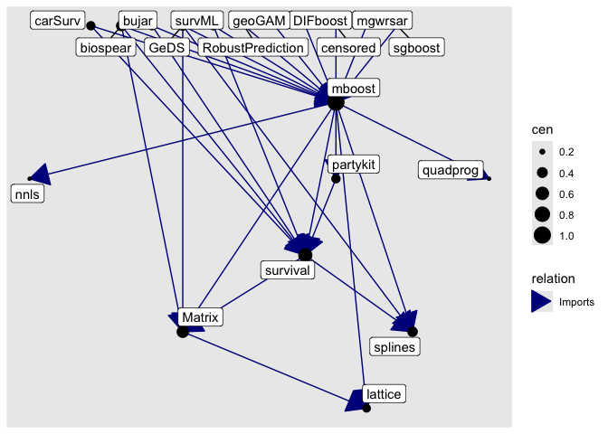

Explore various dependencies of a package(s) (on the Comprehensive R Archive Network Like repositories).
Start with init() which gets metadata from a CRAN like repository.
The package offers four functions:
get_dependencies(): Get direct or indirect dependencies of a set of packages at desired depth (as a dataframe).get_neighborhood(): Get both direct and indirect of a set of packages at desired depth (as a dataframe).as_graph(): Get metadata embedded igraph equivalent of a dependency dataframe.plot(): Static plot of dependency graph.
suppressPackageStartupMessages(library("dplyr"))
#> Warning: package 'dplyr' was built under R version 4.4.3
init()
#> ℹ Fetching package metadata from repositories ...
#> ℹ Computing package dependencies ...
#> ✔ Done!
# what does `mboost` package do
packmeta |> filter(Package == "mboost") |> pull(Description) |> cat()
#> Functional gradient descent algorithm
#> (boosting) for optimizing general risk functions utilizing
#> component-wise (penalised) least squares estimates or regression
#> trees as base-learners for fitting generalized linear, additive
#> and interaction models to potentially high-dimensional data.
#> Models and algorithms are described in <doi:10.1214/07-STS242>,
#> a hands-on tutorial is available from <doi:10.1007/s00180-012-0382-5>.
#> The package allows user-specified loss functions and base-learners.
# Get direct 'import' dependencies of `mboost` two levels deeper
get_dependencies("mboost", level = 2, relation = "Imports")
#> # A tibble: 53 × 3
#> pkg_1 relation pkg_2
#> <chr> <fct> <chr>
#> 1 BayesX Imports coda
#> 2 BayesX Imports colorspace
#> 3 BayesX Imports interp
#> 4 BayesX Imports sf
#> 5 BayesX Imports sp
#> 6 BayesX Imports splines
#> 7 Matrix Imports grid
#> 8 Matrix Imports grid
#> 9 Matrix Imports lattice
#> 10 Matrix Imports lattice
#> # ℹ 43 more rows
# Get neighborhood (direct and indirect) dependencies (of all types) of `mboost` one level deeper
get_neighborhood("mboost", level = 1)
#> # A tibble: 219 × 3
#> pkg_1 relation pkg_2
#> <chr> <fct> <chr>
#> 1 FDboost Depends mboost
#> 2 InvariantCausalPrediction Depends mboost
#> 3 TH.data Depends MASS
#> 4 TH.data Depends survival
#> 5 boostrq Depends mboost
#> 6 boostrq Depends parallel
#> 7 boostrq Depends stabs
#> 8 catdata Depends MASS
#> 9 censored Depends survival
#> 10 expectreg Depends BayesX
#> # ℹ 209 more rows
# convert a dependency dataframe to a graph
get_neighborhood("mboost", level = 1) |> as_graph()
#> IGRAPH 148602e DN-- 55 219 --
#> + attr: name (v/c), title (v/c), relation (e/c)
#> + edges from 148602e (vertex names):
#> [1] FDboost ->mboost
#> [2] InvariantCausalPrediction->mboost
#> [3] TH.data ->MASS
#> [4] TH.data ->survival
#> [5] boostrq ->mboost
#> [6] boostrq ->parallel
#> [7] boostrq ->stabs
#> [8] catdata ->MASS
#> + ... omitted several edges
# plot a dependency graph
get_neighborhood("mboost", level = 1, relation = "Imports") |> as_graph() |> plot()
From CRAN:
pak::pkg_install("pkggraph")You can install the development version of pkggraph from GitHub with:
# install.packages("pak")
pak::pak("talegari/pkggraph")